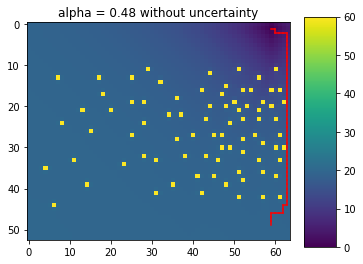
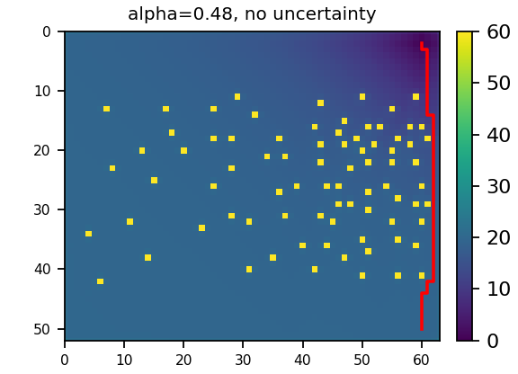
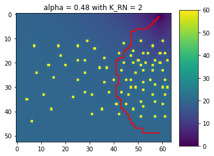
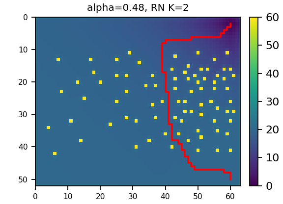
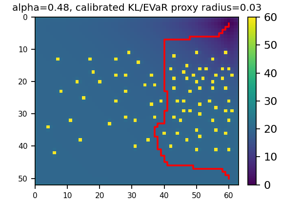
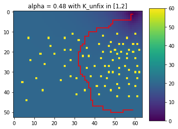
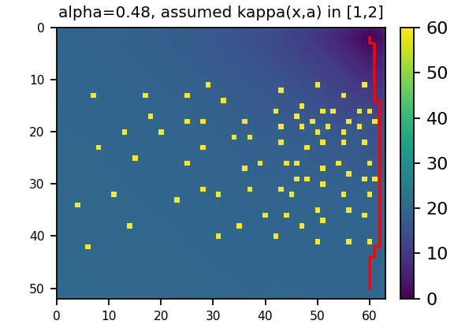

定义目标
在 rectangular ambiguity set 中寻找策略，使所有候选转移模型里最大的 CVaR 最小。
Paper reconstruction and reproducibility audit
这篇论文处理的是两种风险同时存在的决策问题：环境模型可能估错，少数灾难性轨迹又不能被平均值掩盖。 作者先证明固定模型不确定性可以吸收到 CVaR/EVaR 的风险参数中；当不确定程度随状态与动作变化时，再提出 NCVaR 和增广状态动态规划。
核心不是“再提出一种更保守的路径规划算法”，而是证明：风险厌恶与模型鲁棒性可以通过概率分布的对偶集合统一起来。
鲁棒 CVaR 等价于更小置信水平的普通 CVaR：α′ = α/K。
可转化为 EVaR 优化，但论文的符号定义与实验数值之间存在需要核对的不一致。
提出 NCVaR、分解定理、Bellman 算子和插值值迭代。
来源：论文 p.1 Abstract/Introduction；p.3 Sections III-A/III-B；p.3–5 Section IV。
传统 Robust MDP 通常优化最坏模型下的期望总代价。期望值仍会把大量正常结果和少量灾难结果平均，因此不能直接表达“我尤其害怕最坏的那一小部分轨迹”。
标准 CVaR RL 通常假设用于计算策略的转移模型就是可信模型。如果转移概率估计偏差很大，即使策略在名义模型上控制了尾部风险，部署到真实环境时仍可能失效。
很多场景中，不确定性不是外生常数，而是由动作主动改变。例如自动驾驶选择高速超车会进入更难建模的交互状态；金融系统提高杠杆会放大流动性和冲击模型误差；机器人靠近障碍物时，定位误差的后果与可容忍范围都会改变。
因此，若 ambiguity budget 写成 κ(x,a)，策略不仅选择即时成本和下一状态，也在选择“未来模型有多不可信”。这会破坏把所有不确定性压缩成一个固定 α′ 的做法。
| 读者 | 这篇论文对他意味着什么 |
|---|---|
| 非专业读者 | 不是只求平均表现，而是同时防止“地图不准”和“少数事故特别严重”。 |
| 强化学习研究者 | 利用 coherent risk measure 的对偶表示，把 robust optimization 与 risk-sensitive RL 放进同一个分布包络。 |
| 优化研究者 | 处理 rectangular ambiguity set，以及由决策改变的内生不确定集合。 |
| 工程复现者 | 真正困难的不是画 GridWorld，而是恢复未公开的动力学、风险网格和 κ(x,a)。 |
来源：论文 p.1 Introduction；decision-dependent uncertainty 的动机见 p.1、p.3 Section IV。
在 rectangular ambiguity set 中寻找策略，使所有候选转移模型里最大的 CVaR 最小。
CVaR 可以写成对一组重加权概率分布取最大期望。这样，模型不确定性和风险厌恶都变成了“对概率分布取最坏情况”。
外层 ambiguity set 允许名义转移 P 变成 P̃；CVaR 又允许 P̃ 变成尾部重加权分布 Q。作者研究最终 Q/P 的可行范围。
RN 情况得到新的 CVaR 水平；KL 情况得到新的 EVaR 水平，因此可以调用已有风险敏感 RL 算法。
当上界由 (x,a) 决定时，每一步风险包络不同，未来风险水平随最坏分布分配一起变化。
把 κ 显式纳入风险度量，证明它可递归分解，从而得到增广状态 (x,y) 上的 Bellman 方程。
理论算法要在连续置信水平上更新。实践中选 21 个采样点，对保持凹性的 yV(x,y) 插值。
比较无不确定性、固定 RN、固定 KL、决策相关 RN 四种设定，观察策略路径与价值函数变化。
| X | 状态空间，例如 GridWorld 中的所有格子。 |
| A | 动作空间，论文实验中为 east、south、west、north。 |
| C(x,a) | 当前状态执行动作的一步成本。 |
| P(x′|x,a) | 名义转移概率。论文假设它可能不准确。 |
| γ | 折扣因子，控制未来成本权重；论文实验段未给出具体值。 |
| π | 策略，决定在历史或当前状态下选择什么动作。 |
RMDP 不认定某一个 P 完全正确，而是假设真实转移 P̃ 位于 ambiguity set 𝒫 中。策略按集合内最坏的转移模型评价。
论文采用 rectangular ambiguity set：每个状态—动作的转移分布可以在自己的局部集合中变化。这一结构让 Bellman 型动态规划仍然可行；一般非矩形集合的鲁棒策略评价可能是 NP-hard。
即使模型完全已知，动作结果仍随机。CVaR 关心结果分布中最坏的 α 比例。
转移概率本身是估计的。ambiguity set 描述哪些替代模型被认为可能。
来源：论文 p.2 Section II-A，式 (1)；非矩形集合复杂性说明同页。
对“成本越大越坏”的随机变量 Z，本文采用的 CVaRα 可理解为最坏 α 比例结果的平均成本。这里 α 越小，关注的尾部越极端，策略通常越保守。
t 是尾部阈值；(Z−t)+ 只累计超过阈值的损失。
这表示：CVaR 等于一个“对手”在不超过 1/α 的密度比约束下，重新给坏结果分配概率后得到的最大期望。 因而 CVaR 本身已经包含一种分布鲁棒解释。
名义概率：我们估计世界如何运行。
模型扰动后的转移：ambiguity set 里的候选世界。
CVaR 再对坏结果重加权后的最坏评价分布。
来源：论文 p.2 Section II-B；CVaR 对偶集合及式 (2)–(4) 见 p.2–3。
外层最小化策略，内层选择 ambiguity set 中最不利的转移模型，CVaR 又评价该模型下最坏的轨迹尾部。
若模型扰动满足 0 ≤ P̃/P ≤ K，而 CVaR 重加权满足 0 ≤ Q/P̃ ≤ 1/α，两者相乘得到：
EVaR 的对偶集合由 KL 散度球描述，因此固定 KL ambiguity 与 CVaR 包络合并后，可写成新的 EVaR 问题。论文推导写为：
来源：论文 p.3 Sections III-A、III-B；实验数值见 p.5 Section V。
是的，Figure 1d 不是“再选一个固定 CVaR 参数”，而是论文 Section IV 的 decision-dependent uncertainty 案例，理论上应由 NCVaR 和 Algorithm 2 处理。
不同状态、不同动作对应不同 κ(x,a)。策略一旦换动作，允许的模型扰动范围也会变。 所以不能在实验开始前用一个全局常数 α/K 代表整个过程。
与 CVaR 相比，上界不再统一为 1/α，而是由结果或决策对应的 κ 调节。论文证明该风险度量具有 coherent risk measure 的性质。
直接计算整条无限轨迹总成本的分布不可行。分解定理把当前一步的最坏重加权 ξ(x′) 与下一步 NCVaR 联系起来：
新的风险水平变成 αξ，所以置信水平必须成为状态的一部分。于是价值函数不再只是 V(x)，而是 V(x,y)。
来源：论文 p.3–4 Definition 1、Theorem 1、Bellman operator；Figure 1d 说明见 p.5。
理论上 y 连续，无法为每个 y∈(0,1] 存一张价值表。论文选择有限采样点 Y={y1,…,yN}，并在采样点之间插值。
插值对象是 yV(x,y)。原因不是绘图方便，而是论文 Lemma 1 的凹性保持性质正是针对 yV(x,y)；直接插值 V 可能破坏理论结构。
读取动作 a 的后继状态、名义概率和一步成本。
对每个 x′ 计算 u[C+γV(x′,u)] 在置信网格上的值与分段斜率。
把概率质量优先分配给斜率最大的区段，相当于让对手尽可能强调未来成本高的结果。
得到当前 (x,y) 的新价值与 greedy action。
利用 Bellman contraction 得到固定点近似。
solve_robust_cvar_pwl 和 _robust_continuation_pwl 正在实现这一路线；但 NCVaR 的可行域处理存在实质性缺陷，见第 14 节。
来源：论文 p.4 Lemma 1、Theorem 2、Algorithm 1；p.4–5 式 (9)、(10) 与 Algorithm 2。
| 项目 | 论文公开值 | 设计目的 |
|---|---|---|
| 网格 | 64×53，共 3392 个状态 | 规模足以出现多条绕障路线，又可用 value iteration 求解。 |
| 起点 / 终点 | (60,50) → (60,2) | 起终点接近右边界，障碍密集区迫使策略权衡直行与绕行。 |
| 动作随机性 | 目标方向 0.95，其余三方向各 0.05/3 | 即使策略选择正确动作，也有小概率偏航，为尾部事故提供来源。 |
| 成本 | 安全移动 1；碰撞障碍 40 | 让“短路径”和“远离高代价碰撞”形成明显冲突。 |
| 障碍物 | 80 个 | 构造多个局部风险区域，使风险敏感策略有可视化差异。 |
| 置信水平 | α=0.48 | 作为四个面板的共同起点，便于比较 uncertainty set 的影响。 |
| 插值点 | 21 个，满足 yi+1=θyi | 在有限计算量下近似连续风险维度。 |
检验已有 CVaR 值迭代在名义模型上的路径。
验证理论等价：从 α=.48 变为 α′=.24。
通过 EVaR 风险包络体现另一类 ambiguity set。
验证 NCVaR/Algorithm 2 能处理决策相关不确定性。
来源：论文 p.5 Section V 与 Figure 1 caption；未公开项来自 PDF 全文核查。
左列为从论文 PDF 第 5 页抽出的面板，右列为当前项目输出。红线是展示路径；底色表示最优价值，蓝色较低、黄色较高。







PDF
├─ 正文公式与参数 ───────────────────────┐
└─ Figure 1 嵌入图像 │
└─ extract_paper_figure_data.py │
├─ obstacle CSV ─────────────┤
└─ paper path CSV │
▼
gridworld.py ── environment ── value_iteration.py
│
├─ value / policy / path
▼
render.py
│
├─ reproduction PNG
└─ compare_paths_to_paper.py
└─ quantitative discrepancy先逐项标记：PDF 明确给出、从图像恢复、项目假设。不要在写求解器后才反推参数。
抽取四个嵌入面板，识别 80 个障碍和四条红线。保存原图、坐标 CSV 和像素到网格的映射边界。
python scripts/extract_paper_figure_data.py检查状态数、障碍数、起终点、每个状态动作转移概率和为 1；分别测试边界、障碍、终点和重复后继合并。
它是环境正确性的基线，也可作为风险表面的初始化。若风险中性路径已经异常，不应继续调 CVaR。
建立 21 点风险网格；对 yV 插值；验证 κ=1 时的 1a，再在 y=.24 读取 1b。
Figure 1c 主图使用 calibrated 半径 0.03；Section III.B 推导出的半径单独输出到 diagnostic_*。两者不再互相覆盖。
在修 1d 前，必须从作者或补充材料确认 yξ>1 如何处理，并取得或设计可辨识的 κ(x,a)。之后再实现 Figure 1d。
论文算法输出策略。红线只是策略的一种可视化。应同时报告最大概率路径、Monte Carlo 碰撞率、成本均值、CVaR/EVaR 和路径长度。
至少扫描 γ、θ、碰撞动力学、边界行为、κ 构造方式，判断结论是否只由某个任意假设产生。
conda activate portfolio
python -m py_compile robust_cvar_repro/*.py scripts/*.py
python -m unittest discover -s tests -v
python scripts/extract_paper_figure_data.py
python scripts/run_strict_gridworld.py
python scripts/compare_paths_to_paper.py| 面板 | 论文路径点 | 复现路径点 | 平均最近网格距离 | 判断 |
|---|---|---|---|---|
| 1a 无不确定性 | 59 | 53 | 0.528 | 较接近，可作为当前最佳面板 |
| 1b RN K=2 | 98 | 91 | 1.505 | 趋势与形状大体接近，但仍依赖未公开动力学 |
| 1c KL calibrated | 102 | 97 | 1.722 | 主红线路径已恢复；公式诊断另存，不冒充同一结果 |
| 1d κ(x,a) | 118 | 53 | 13.019 | 价值已变化，但未公开 κ 使路径仍无法恢复 |
| 输出 | 最小值 | 最大值 | 含义 |
|---|---|---|---|
value_a_*.npy | 0 | 24.2076 | 1a 当前价值切片。 |
value_b_*.npy | 0 | 28.4621 | 更小风险水平带来更高的尾部成本评价。 |
value_c_*.npy | 0 | 26.2854 | 主图 calibrated 1c；严格公式结果位于 diagnostic_value_c_kl_kappa_2.npy。 |
value_d_*.npy | 0 | 24.3840 | 与 1a 最大逐状态差异为 0.2010，κ 已实际进入求解。 |
3392 个状态、4 个动作、80 个障碍，动作概率按 0.95 与 0.05/3 构建。
风险 Bellman 更新使用每个后继对应成本，而不是只使用期望一步成本。
interpolate_value_surface 对 yV 插值后除以目标 y，方向与论文一致。
# robust_cvar_repro/value_iteration.py
upper_u = float(kappa)旧版使用 min(1,κ)，使所有 κ≥1 退化为 1。修正版按论文约束允许 u=yξ≤κ，返回最优风险分配并沿轨迹更新风险状态；对 u>1 使用显式风险中性端点扩展。
risk_cost = max(expected_cost - safe_cost, 0)
risk_score = min(risk_cost / (obstacle_cost - safe_cost), 1)
kappa[x,a] = 1 + risk_score这是项目根据局部期望碰撞成本设计的可解释代理。其大部分元素接近 1： 13568 个状态动作中，11392 个恰好为 1，1602 个为 1.0167，只有障碍邻域少量动作接近 1.95。 即使修复求解器，它也未必产生论文 Figure 1d 那种全局中部绕行。
alpha_evar = 0.03
figure_kl_radius = 0.03
diagnostic_kl_radius = -log(alpha) + log(2)/alpha
solve_kl_robust_value_iteration_vectorized(env, kl_radius, config)calibrated 半径 0.03 能得到 97 个路径点，与论文 102 点红线平均距离 1.722。公式半径约 2.18 时只有 16 个路径点。主图因此恢复 calibrated 结果，但明确标为代理；公式结果保留为独立诊断。
extract_path 每步选择概率最大的后继，等价于展示“最可能动作结果”下的确定性路径。
它不会模拟 5% 偏航，也不能直接验证 CVaR。风险敏感策略的真实优劣应通过多次随机 rollout 的总成本分布来评估。
| 优先级 | 任务 | 完成标准 |
|---|---|---|
| P0 | 取得作者原始 κ(x,a) | 在没有原始矩阵前，1d 只能标记为透明假设复现。 |
| P0 | 让作者确认 yξ>1 处理 | 当前风险中性端点扩展是显式项目规则，不应冒充作者原始实现。 |
| P0 | 取得或识别 κ(x,a) | 作者提供原始矩阵，或明确将替代构造定义为新实验而非论文复现。 |
| P1 | 实现真正 EVaR RL | 依据论文引用 [35]，使用与风险水平一致的递推或优化，不把 α′ 当 KL 半径。 |
| P1 | 补充 Monte Carlo 评价 | 每个策略报告平均成本、VaR、CVaR、碰撞概率、到达率和置信区间。 |
| P1 | 加入模型假设敏感性 | 扫描 γ、碰撞终止、边界行为、θ，并展示路径与风险指标变化。 |
| P2 | 升级图像比较 | 除路径最近距离外，比较路径 Hausdorff 距离、价值图相关性和策略一致率。 |
严格按可确认公式运行 1a、1b；1c、1d 在口径未确认前不做“严格”标签。
将每个未公开参数作为实验因子，观察结论是否稳健。
把自定义 κ(x,a) 明确称为“基于局部碰撞风险的扩展实验”，评价其实际安全指标。
两者都是。它研究的是 robust CVaR：外层对模型不确定性取最坏情况，内层用 CVaR 控制轨迹成本尾部。论文的贡献正是把两者通过风险包络合并。
本文的 CVaR 参数化把 α 解释为尾部质量，因此 α 越小越极端。0.48 的风险厌恶程度相对温和，但在加入 K=2 后变成 0.24。选择 0.48 主要服务于可视化比较，不代表通用安全标准。
按论文固定 RN 预算的等价结论，不需要独立的新鲁棒求解器。可以对普通 CVaR 表面在 α′=α/K 处读取价值与策略。当前代码采用了这一思路。
是。论文 p.5 明确说 Figure 1d 用于评估 Algorithm 2 的 decision-dependent case，预算范围为 [1,2]。它不能由固定 α′ 代替。
κ 截断已经修复，价值函数也确实变化；但论文没有公开完整 κ(x,a)。当前局部碰撞风险 κ 只在障碍邻域明显大于 1，无法制造论文中那种全局向中部绕行的策略。
主四图使用 calibrated 半径 0.03，因此红线路径已经恢复。按 Section III.B 计算的公式半径结果保存在 diagnostic 文件中，只用于审计论文数值口径。
不足以做强结论。Figure 1 展示价值图与一条红线，没有报告随机 rollout 的碰撞率、CVaR 估计、统计方差或多环境结果。它更接近概念验证。
理论上，它把模型鲁棒性与 coherent risk measure 的对偶表示统一起来，并为决策相关不确定性提出可递归的风险度量。工程上，它提醒我们：安全策略不仅要防随机坏结果，还要防模型在某些决策区域更不可信。